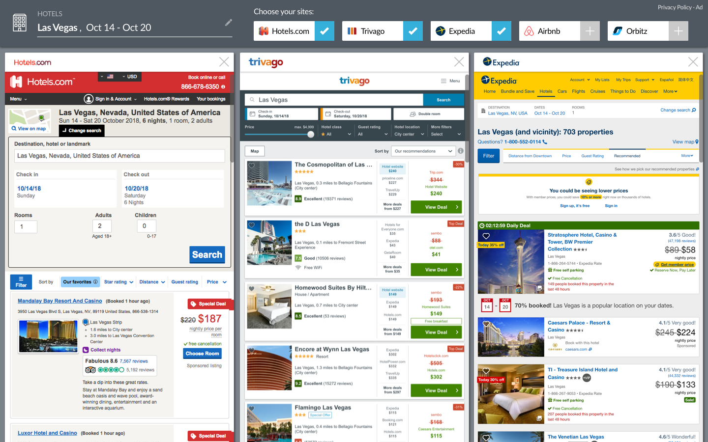

Designing The Experience
Mocks and Prototypes for "DYO"
A few days rapid iterative design and several usability testing sessions later, we created a new and improved Tab Compare, which we renamed as Dynamic Yield Optimization - or "DYO". Two major functional improvements we made here were the editable search form and ability to choose which sites to focus on. Tab Compare becomes DYO. Our redesigned product now takes the form of a dynamic set of panes that load advertisers according to what the user selects.
In addition to the added ability to swap in and out both the number of sites and the brands they wished to compare, more design enhancements are below:
- Separate panes to visually differentiate multiple sites being rendered in one window.
- Checkboxes, logos, and enticingly clickable cells to promote comparison shopping utility.
- Retrievability and seamless ability to compare up to 4 sites at a time.
- Smooth transition animations to cue hierarchy, functionality, and trustworthiness.

DYO, the comparison shopping assistant - now live.
After testing this new design of DYO, we received user feedback that proved our solution indeed improved usability substantially, easing some pain points users feel while comparison shopping for travel.
- “I like this a lot actually...can quickly understand the functionality”
- "...easy to enter my dates once and do a process of elimination to find the most relevant deal.”
- “I feel confident choosing a good hotel because I can see all the sites upfront. It’s exactly what I want.”
Needless to say, we were deeply satisfied with the positive reactions here versus the initial feedback we received on our original Tab Compare design!